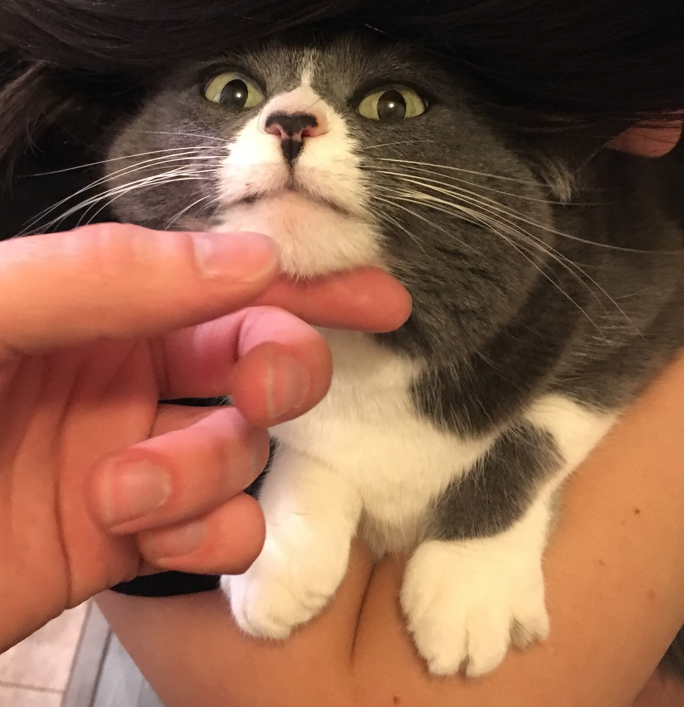
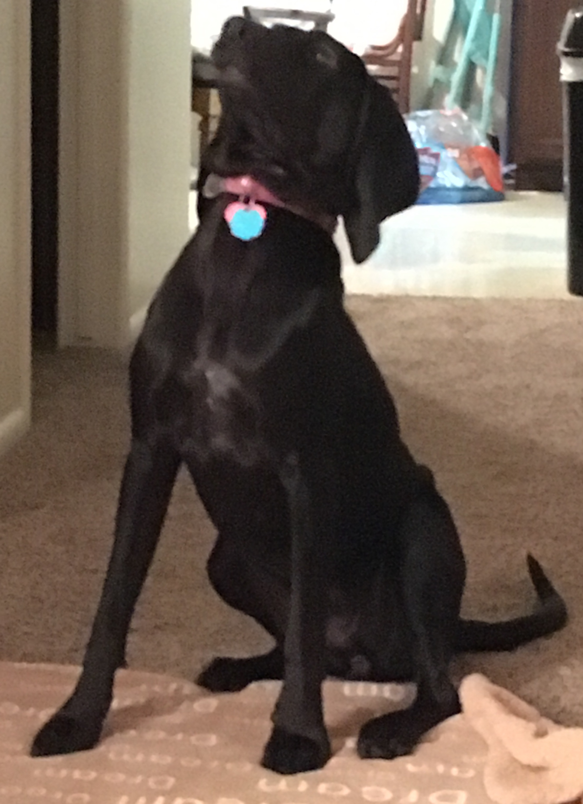
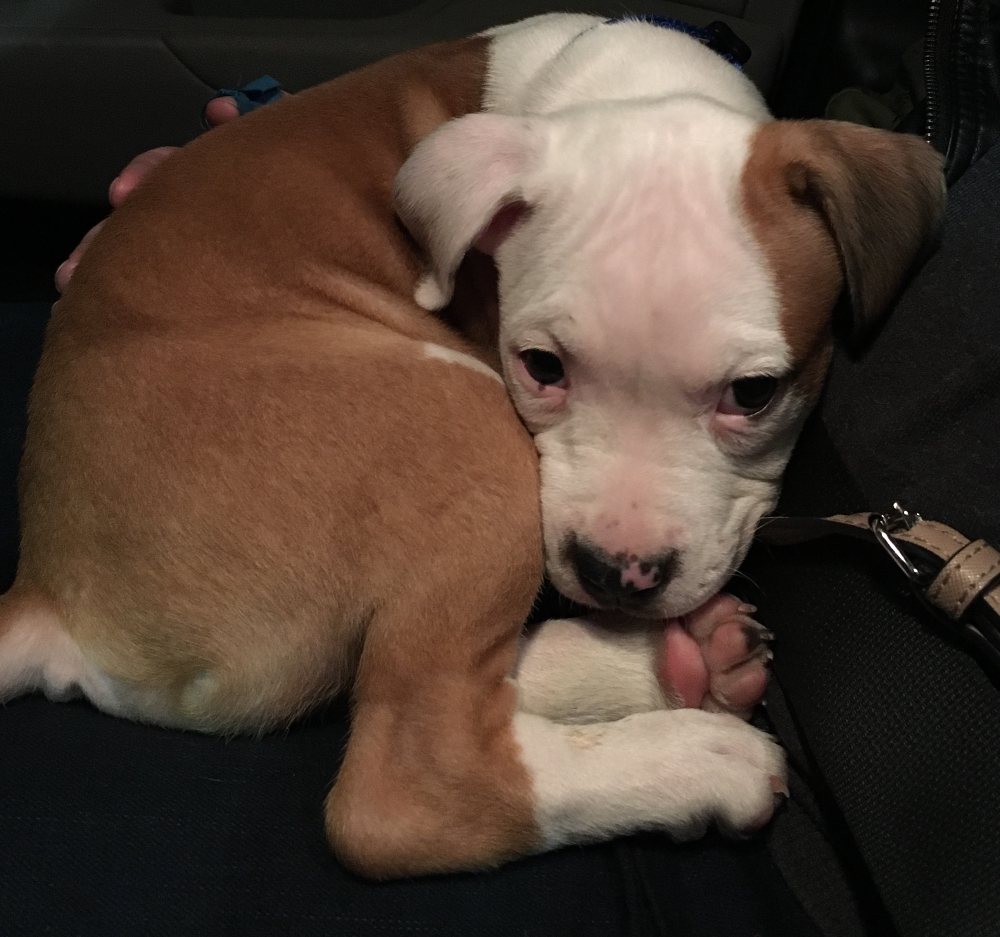

This is Daisy! She's our only cat and the oldest pet she's roughly 9 years old. We have no idea what breed she is.
This is Hope! She's our oldest dog and she's a Coon Hound mix. She has about 6 different kinds of hound in her.
This is blue! He's the youngest at 4 months old and he's a Pitbull Boxer mix.
